Road of the Old King
A top-down 2D action RPG built in Unity 6.3.
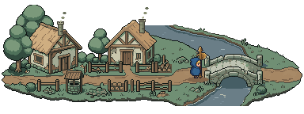
Chapter I
The Axe
The player's only weapon, a bronze double-bladed axe: swung, thrown and recalled.
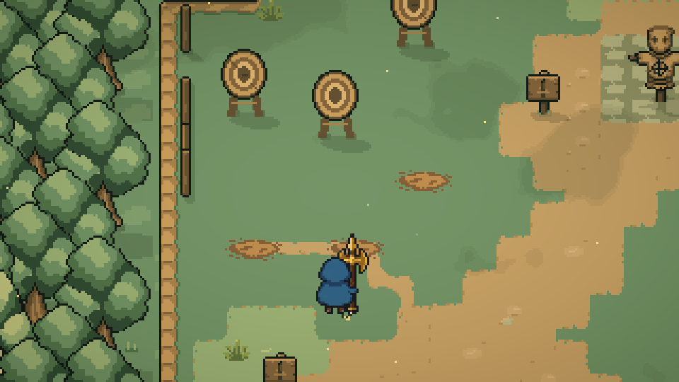
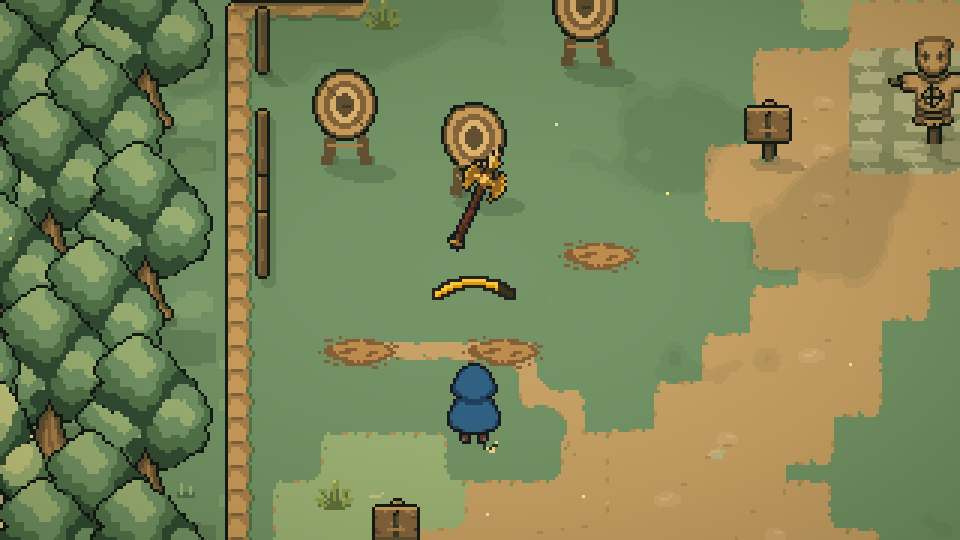
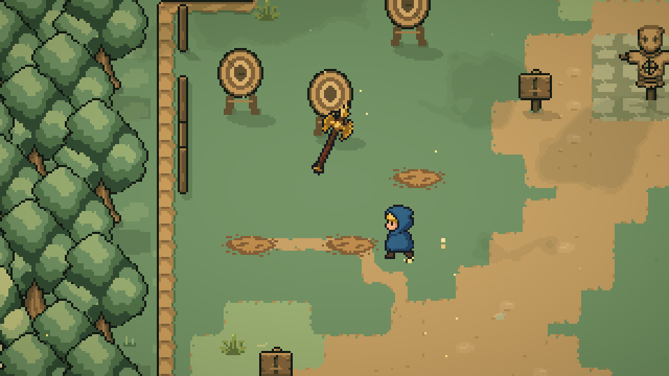
- Light comboA sweep, a reversed sweep and a lunging thrust: 10, 10 and 25 damage.
- Charged cleaveHold to charge, release to spin a full circle for up to 30 damage. The charge can be held as long as you like.
- One clockDamage, the ground footprint and the weapon pose read one action clock: windup, active, recovery. A hit pauses that clock briefly.
- Stamina100 points for every action. Any action can start above zero and push into a deficit; attacks in deficit deal 60% damage.
- Recall stone and gateIn the Tutorial, a throw that strikes the ancient stone awakens Recall, and the sealed gate opens when the axe is recalled out of it.
- The sluiceIn the Lowlands, a crank moves the lodged axe on a carriage, then one Recall must cross two locks in order to drain the pond.
Chapter II
Art
Native pixel art on a 16-pixel grid, drawn from shared palettes.
- 16 PPUWorld sprites use 16 pixels per unit. Terrain uses 16 × 16 tiles; characters and props span larger canvases.
- Shared palettesTerrain, foliage and architecture use shared environment palettes with per-piece colour budgets. Accepted character art keeps its own palette.
- CharactersPixelLab supplies eight-direction character art. The hero has walk, run, dash, hurt, throw, drink, rest and ready-stance clips; attacks pair the ready stance with a procedural axe swing. Every enemy has movement and death clips, and most attacks have their own.
- Separate weaponThe hero has no arms. The axe is its own sprite with one whole-pixel grip per facing, in front of or behind the body, where a cloak fold wraps the haft.
- Cloak colourChosen at New Game. A shader recolours the cloak's blues by brightness, so the shading survives.
- RuleTile terrainRuleTiles choose edge, corner and junction sprites from their neighbours; five materials cover all 47 combinations. Paths overlap ground on separate maps.
- Layers, not collisionVisual tilemaps and collision are independent. Trees and buildings split into base, overhead and collision, so the player can walk behind canopies.
- Drawn heightHeight is drawn, not simulated: one physics plane, one 16 px row of wall per level, and stairs and ramps as the only links.
- PipelinePixelLab art and Python tile exporters feed editor importers. The game loads only ordinary Unity assets.
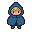
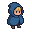
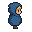
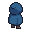
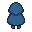
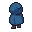
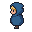
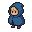
Tutorial · Hearth and Meadow
- Grass shadow #384b3c
- Grass shade #60724d
- Grass base #8b9b5e
- Grass light #beca82
- Deep timber #543f36
- Timber #826047
- Dirt #b58c61
- Dry earth / straw #dfc291
- Roof shadow #794a41
- Clay roof #b86f50
- Warm roof edge #d99a67
- Cream plaster #f1deb0
- Well stone shade #77766a
- Well stone light #b2ae91
- Muted water #6e9f9a
- Sun gold #e7b85c
Green Lowlands · Field and Old Road
- Foliage shadow #304c42
- Foliage shade #4f7050
- Meadow base #7f995a
- Meadow light #b5c97c
- Deep timber #543f36
- Timber #826047
- Dirt #b58c61
- Dry earth / straw #dfc291
- Ruins shadow #585f58
- Weathered stone #7c8370
- Stone light / lichen #a6aa8a
- Sunlit stone / birch #d4ccaa
- Stream depth #395f66
- Stream base #638c8e
- Stream reflection #9bc0ae
- Sun gold #e7b85c
Chapter III
Vegetation
Grass, flowers and reeds react to wind, the player and attacks.
- WindEach blade is two leaf sprites with staggered wind timing, rotating smoothly around a bottom pivot. No row deformation, stepped animation or UV distortion.
- MovementGrass, flowers and reeds bend away from the player's feet and settle after they pass.
- CuttingSwings, throws and Recall cut plants during the attack's damage window. Leaf fragments arc, bounce and fade from a fixed pool; cut plants stay cut between scene visits and regrow when the player rests.
- DepthPlants south of the player's feet draw in front and plants north draw behind. Only nearby chunks pay for the extra draw.
- RenderingOne field owns small spatial mesh groups, with sway in the shader. Cutting removes triangle indices; there are no per-plant objects or colliders.
- PlacementAn editable density map places patches and keeps paths, water and interaction clearings open. Each region bakes its own field, leaving out plants that would reach into a prop behind them.
Per-plant root and phase data follows the GPU Gems grass animation approach.
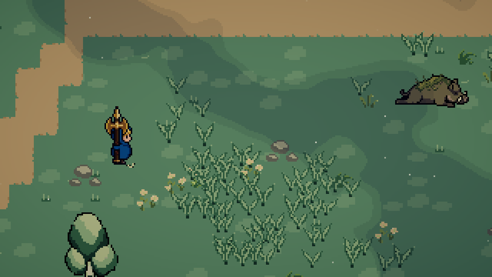
Chapter IV
Enemies
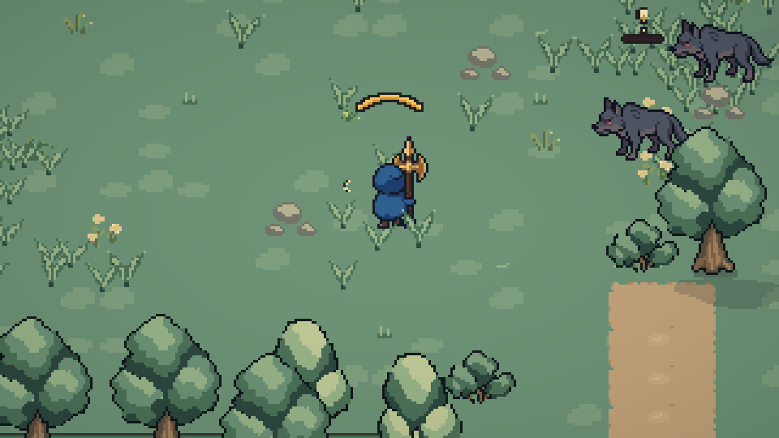
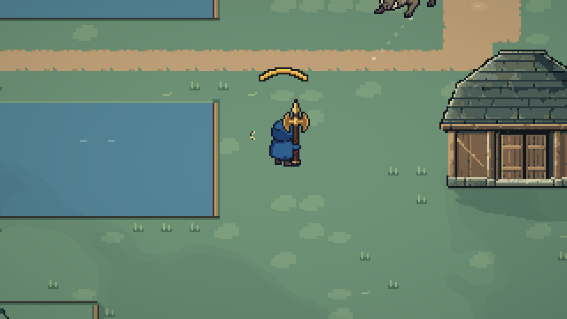
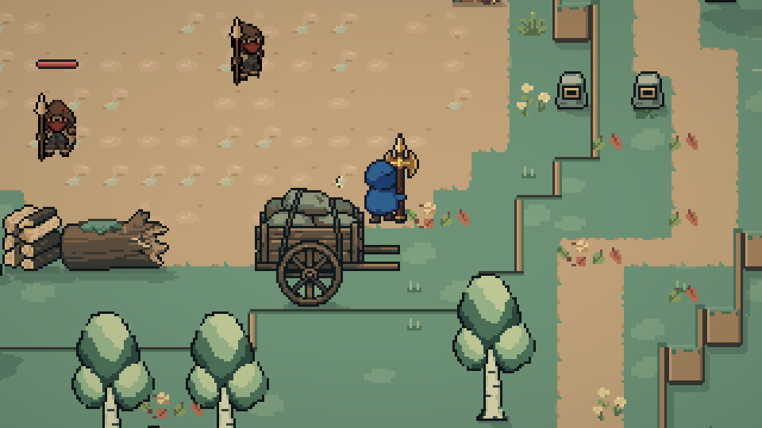
- RatsThorn Rats in the Lowlands and Field Rats in Ardan's Edge dart in, nip and back off. Their danger is numbers.
- Broken WatcherThe first boss, guarding the sluice. It wakes when approached or struck, slams a full ring, sweeps close and drags a distant player in. Fog walls hold the fight.
- One attack contractWindup tracks you, the lock fixes the direction, active can hit, and recovery is your opening. Recovery is never cancelled.
- Ground warningsAttacks are chalked on the ground at their true reach and width: lanes for lunges and charges, wedges for swings.
- No shared turnEach enemy attacks on its own rhythm. Placement and notice range shape groups, so a careful player can pull one at a time.
- Leash and mendingEnemies give up once the player gets away, walk home and heal 10% of their health per second out of the fight.
Every enemy runs one action at a time through one action runner. PredatorBrain chooses for wolves; PursuitBrain, with per-enemy data, for the rest.
Inspired byDark Souls: poise that breaks under accumulated hits, armour during committed attacks, telegraphed windups, no shared attack turn, and a fog wall around the boss.
Chapter V
Bonfires
Checkpoints where the player rests, travels and respawns.
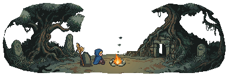
- LightFirst use lights the fire, saves and makes it the respawn point.
- HealResting restores health and refills the three flasks.
- ResetEnemies respawn and cut grass regrows.
- KeepCoins, tools, upgrades and opened shortcuts stay saved.
- TravelAny lit fire can be reached from another, listed by region.
- UpgradeUpgrade fires burn a larger gold flame and sell one of three exclusive weapon upgrades for three Sun Shards.
Inspired byDark Souls: bonfires that save, heal and connect by travel, flasks refilled by resting, and enemies that return when you rest.
Chapter VI
Atmosphere and Graphics
Lighting, colour grading and atmosphere layered over native pixel art.
- 2D lightingWorld art, characters and grass use lit materials under one Global Light 2D per scene. Bonfires add flickering local light to nearby ground, grass and characters.
- Colour gradeEach region's grade sets contrast, white balance, split toning and a soft vignette, with no blur over pixel edges. Bloom is off in Restrained and low in Cinematic.
- Region looksOne camera-fitted overlay draws cloud shade, sunlit breaks, light shafts and mist, with ambient motes. It eases to half strength during combat.
- Two modesRestrained, the default, keeps everything on the 16 PPU grid: the overlay snaps and steps its tones, and motes are single pixels. Cinematic adds soft light, glowing motes and bloom.
- Baked shadowsBuildings, trees and props cast short shadows in one light direction into native 16 PPU masks. Terrain casts only from real height edges onto lower ground.
- WaterRipples, falls and foam are four-frame tiles. The draining pond retreats by a baked depth map in a shader, shallow edges first, with no fluid simulation.
- Dark interiorsThe global light stays near zero and a cover shader keeps every unlit pixel black. The lantern, once owned, is a 2D light with wall shadows.
- Hit feedbackHits flash, pause briefly and kick the camera along the blow; a controller rumbles. Axe strikes sound and fleck by material. Settings scale each effect down.
- RewardsNew rewards fall in under a light and shimmer until taken, then rise over the hero for a moment while the world stops.
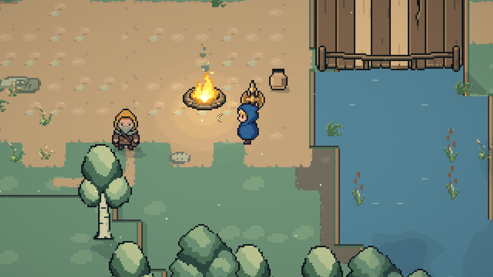
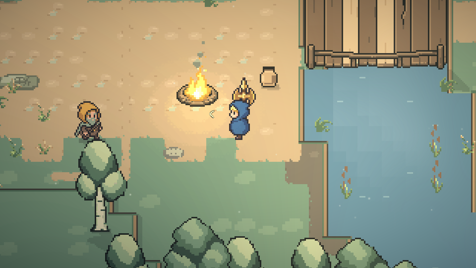
Chapter VII
Interface
Interface elements sorted by whether they exist in the game world and whether they are part of its fiction.
- Vitals: a health bar and one flask icon per charge. Contextual mode reveals them for damage, healing and combat; missing health keeps them visible. Settings also offer an always-visible HUD.
- One prompt names the action, such as “Light Bonfire” or “Rest”, beside an icon of the key or button on the device last used.
- Inventory, pause and settings menus built from one pixel UI kit.
- A dialogue box, and the words of a sign being read, low on the screen while the world keeps moving.
- Place names and events such as “BONFIRE LIT” share one queue and one position, regions largest.
- A boss's name and long health bar along the bottom during its fight.
- A small flame blinking in the top-right corner while the game saves.
- Bonfires: an unlit fire must be lit before it can be rested at; a lit fire's flame, smoke and light mark it. Upgrade fires burn a larger gold flame in a bronze brazier.
- The Recall stone glints when its lesson is ready. Puzzle parts that Recall can strike sparkle now and then; a locked crank shows a pin that pops out when the puzzle frees it.
- The axe is always visible: gripped in a fold of the cloak, lodged where it landed, translucent cyan while recalled.
- Pickups announce themselves: hearts hover with a double beat, Sun Shards float, coins hop and turn.
- Inscriptions are carvings in the world, read where they stand.
- A stamina arc over the hero whenever stamina is below full: ochre-gold, red in deficit, flashing when an action is refused.
- A charge bar under the hero for the cleave.
- Enemy health bars and the “!” awareness cue.
- Swing footprints on the ground: an outline during windup, filled while active.
- Enemy attack warnings chalked on the ground, following the attack until it locks.
- An aim chevron, drawn above roofs and trees.
- A red screen-edge vignette on damage that pulses like a heartbeat at low health.
- Hit-stop and a camera kick along the blow.
- The camera leans in during conversations; the bonfire menu frames the hero on the left third.
- Controller rumble on hits, the full charge, the catch and slams.
- Every flash, kick and rumble can be scaled down in Settings.
- Contextual HUDContextual mode hides unneeded vitals during exploration. Damage, healing, combat and missing health reveal them; an always-visible mode is also available.
- One kitPanels, menus, chips and prompts share one kit and the game's pixel fonts. One UI pixel is 2 px on a 960 × 540 reference canvas.
- Anchored chipsChips tied to world points are placed after the camera moves and snap to whole screen pixels, so they never shimmer against the world.
- Device promptsPrompts and the pause menu's control list follow the last-used device, with Xbox or PlayStation button names, from one source of labels.
- MenusInput goes only to the top menu of a stack. Title, pause, bonfire and defeat screens share one theme.
- SettingsVolume, window mode, screen flashes, shake and vibration, kept outside the save.
Inspired byDark Souls: place names, “BONFIRE LIT” and “GUARDIAN FALLEN” announced in one shared style.
Chapter VIII
Architecture
Gameplay owns state. Presentation only samples it.
Input
Gameplay
Presentation
Persistence
- Single writers. One component moves the player, one the camera, one sets the sprite.
- Hits are data. A weapon delivers a CombatHit and never knows what it struck.
- Events for reactions. Health raises; knockback, particles, HUD and rewards listen.
- One action at a time. A brain picks an enemy action; one runner owns its commitment and cancellation.
- Leases, not flags. Control locks, pauses and menus are held as leases, so overlapping ones never release each other.
- Tuning in data. Weapons, upgrades, enemy attacks and animation live in ScriptableObjects.
Chapter IX
Roadmap
Implemented areas and approved direction, reviewed 23 November 2026. Planned content is not in the playable build, and its names can still change.
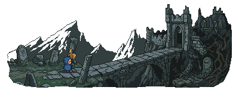
- Ardan's EdgeTutorial · playable
- Green LowlandsPlayable · first boss, sluice and first upgrades
- Barrow WoodsPlanned for 0.6 · the lantern, burial field and vault
- Storm HighlandsPlanned · Stormworks machine trial
- The Old King's SeatPlanned · final approach and the King
Next: polish and sound for a playable demo, then Barrow Woods. The Lowlands' storehouse and Old Drain stay dark until the lantern arrives. Barrow, the Highlands and the final area are unbuilt; their artwork here is concept art.
Build log
- 0.6Full production · planned
0.6 PlannedBarrow Woods, the lantern and the Lowlands' dark interiors
- 0.5Full production
Unreleased NextField rats and lesson signs in the Tutorial; Recall's first use opens the sealed gate
0.5.1-dev.1 LatestBonfires and controllers
0.5.0The Green Lowlands
0.5.0-dev.2The Broken Watcher and a bigger Lowlands
0.5.0-dev.1Atmosphere, light and feedback
- 0.4Vertical slice
0.4.9Controller support and world polish
0.4.8Green Lowlands, exploration and economy
0.4.7Combat and Tutorial overhaul
0.4.6Tutorial guide and movement feel
0.4.5New hero and combat feel
0.4.4Wolf enemy and Tutorial integration
0.4.3Directional movement and combat
0.4.2Player and axe integration
0.4.1Tutorial world
0.4.0World art kits
- 0.3Gameplay loop prototype
0.3.1Stamina and progression
0.3.0Prototype loop
- 0.2Core prototype
0.2.0Axe combat
- 0.1Pre-production
0.1.1First tiles
0.1.0Movement foundation
The current build is a Windows download.
Download for Windows